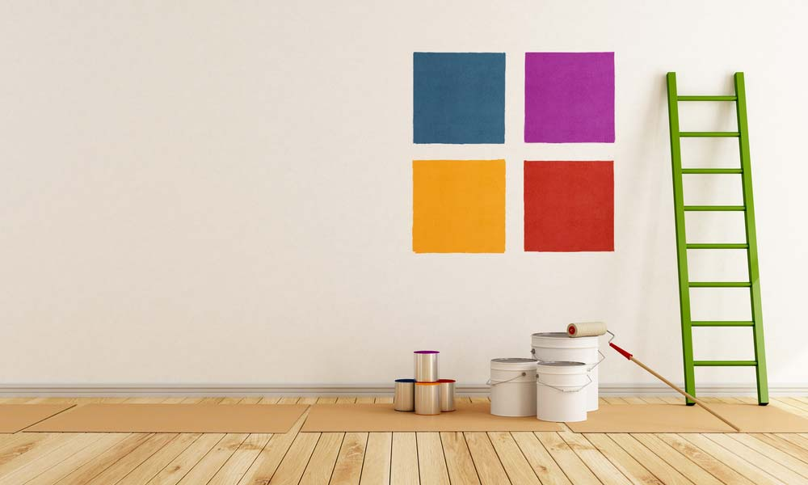

Como calcular a quantidade de tinta para sua parede
Veja como calcular a quantidade de tinta, diluir os produtos, materiais necessários e como preparar as superfícies.

1. Calcule a área:
Meça a altura e a largura e multiplique. Ex: 2,60m (altura) x 3,30m (largura) = 8,58m2.
2. Subtraia a área de portas e janelas:
Meça da mesma forma (Ex: janela de 1m x 1,20m = 1,20m2) e subtraia da área da parede (Ex: 8,58m2 - 1,20m2 = 7,58m2).
3. Divida pelo rendimento acabado:
Divida a área a ser pintada pelo rendimento acabado referente à embalagem. Ex: 7,38m2 / 5,5m2 (rendimento do quartinho de 800ml) = 1,34 Ou seja, 1 quartinho e meio de tinta já são suficientes. O mesmo cálculo deve ser feito para os outros formatos de embalagens, como galões e latas.
4. Pronto!
Viu como é fácil? Você já tem a quantidade necessária de tinta para a pintura da sua parede. Agora, é colocar a mão na massa. Quer dizer, na tinta.